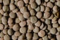
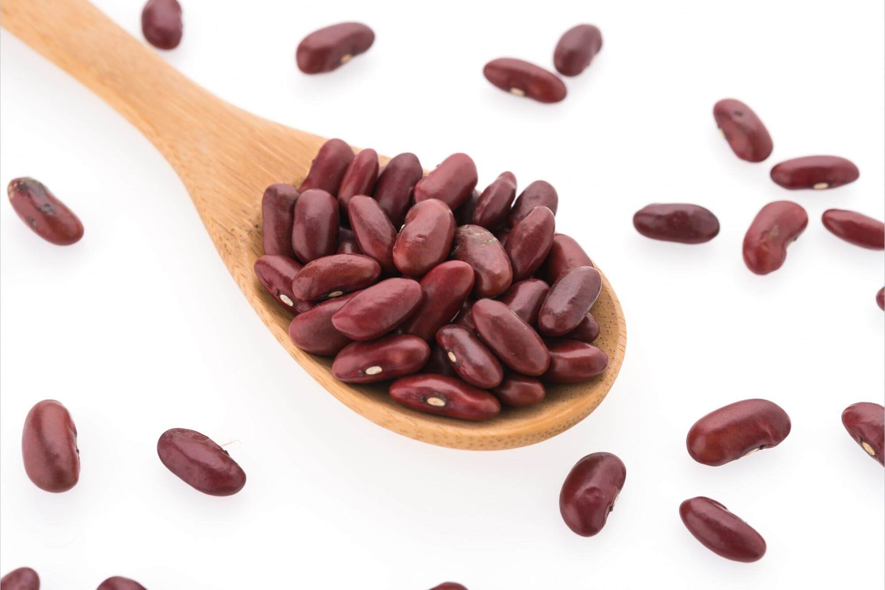
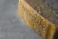
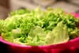
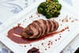
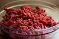

Lista del supermercado
Abarrotes
arroz
Esto es el arroz oriental
lentejas

Esto son las lentejas
Frijoles

Lacteos
Leche
Yogurt
Queso parmesano

Verduras y frutas
Lechuga

tomates
Aguacate
Carne y pescado
Salmon
Lomo de cerdo

Carne molida
